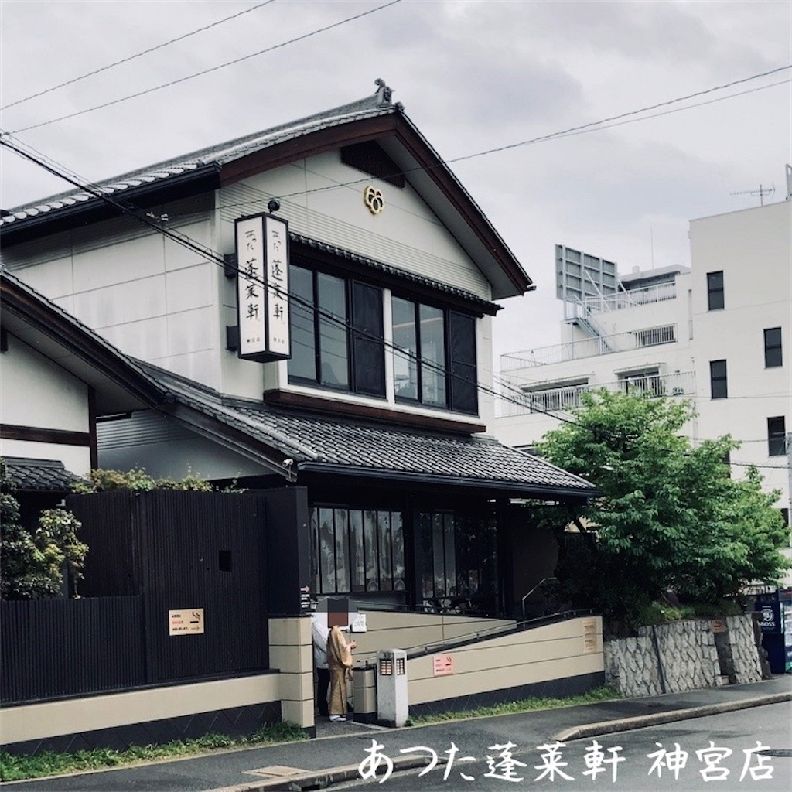
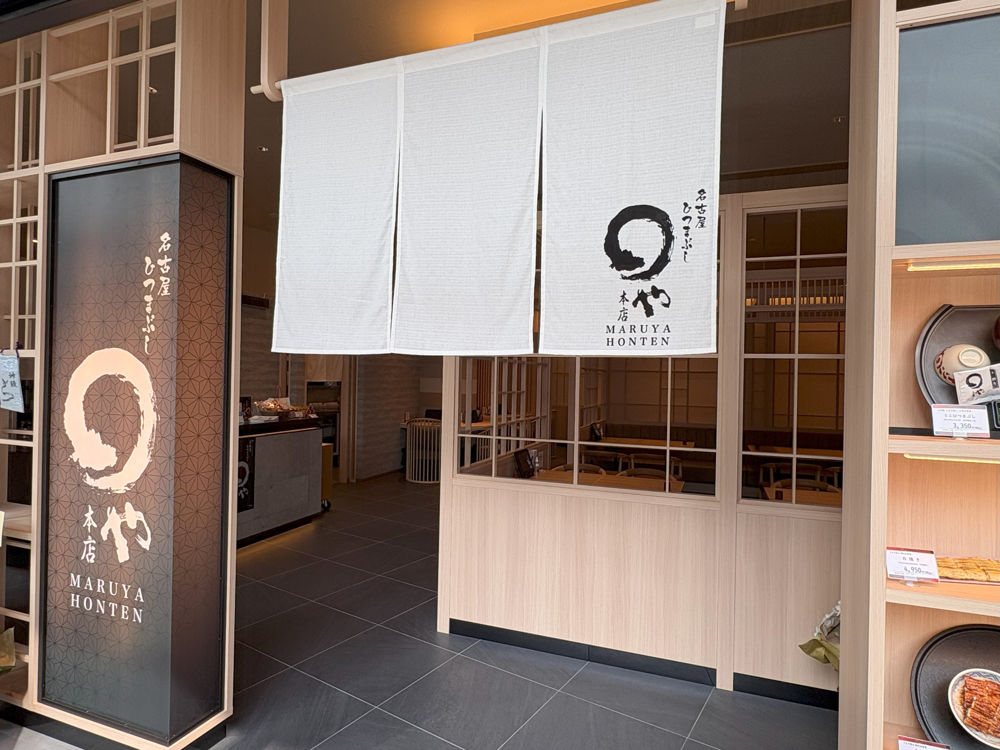
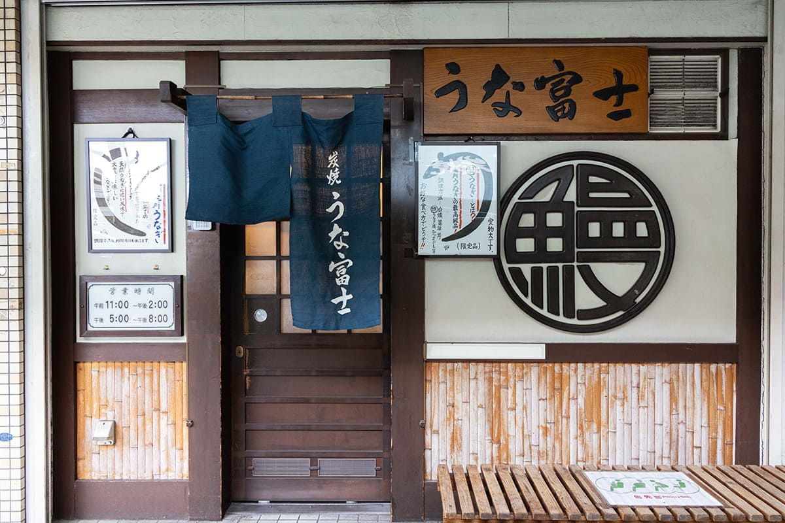
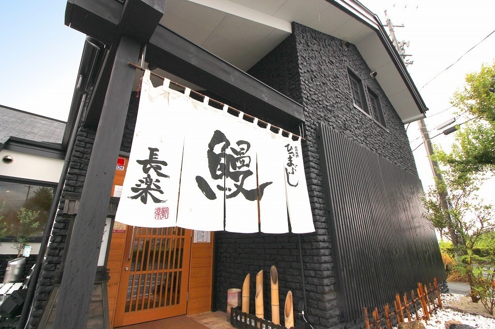

愛知県のご当地グルメ紹介
ひつまぶしとは
ひつまぶしは、名古屋の伝統的な料理で、うなぎをご飯の上にのせ、特製のタレをかけた料理です。食べ方にはいくつかの方法があり、まずはそのまま食べ、次に薬味を加えて楽しみ、最後にお茶漬けとして食べるなど、一つの料理で様々な味を楽しむことができることが魅力的な料理です。
ひつまぶしを食べれるお店
あつた
蓬莱軒

厳選された鰻と
伝統的なタレと
炭火焼きで昔と
変わらぬ味を提供
まるや
本店

縁をつなぐように
と願いを込められ
丸と深い関わりを
持つ。米すら
こだわる一品を提供
炭焼
うな富士

炭火で焼いた
うなぎはふんわり
柔らかく旨みが
広がる
一品を提供
ひつまぶし
長楽

時に応じて
高品質の鰻を
厳選し仕入れて
常に最高の品を
提供